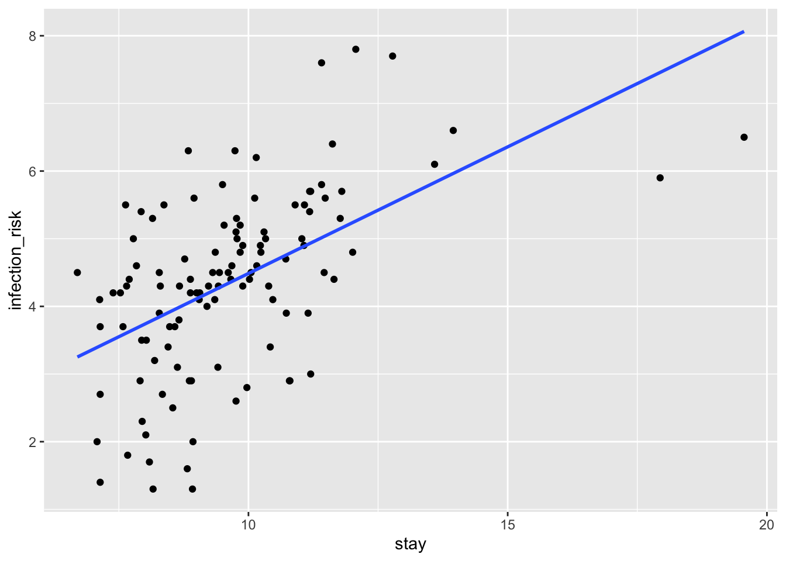
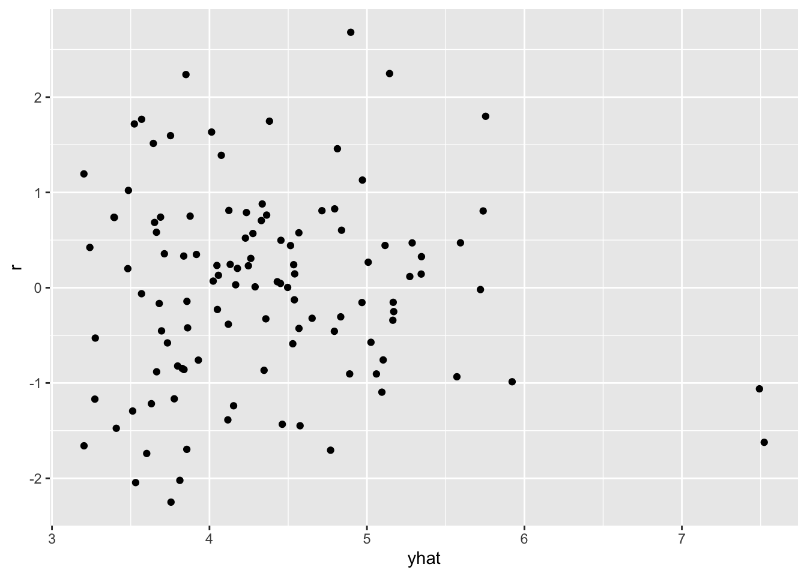
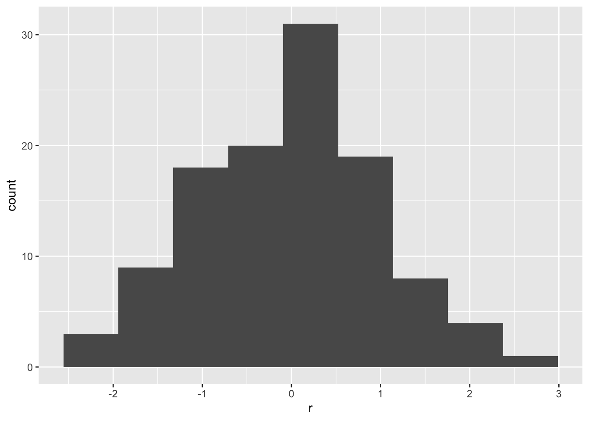
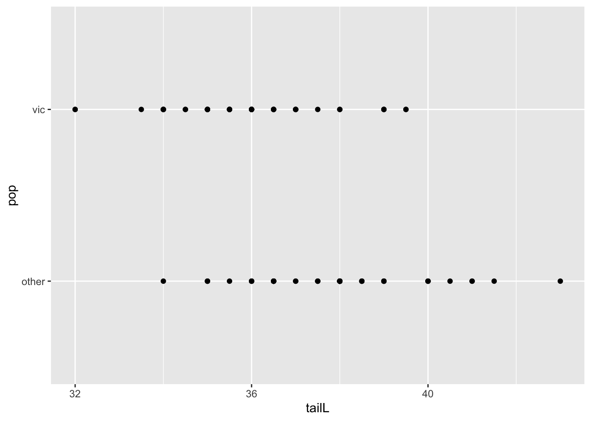
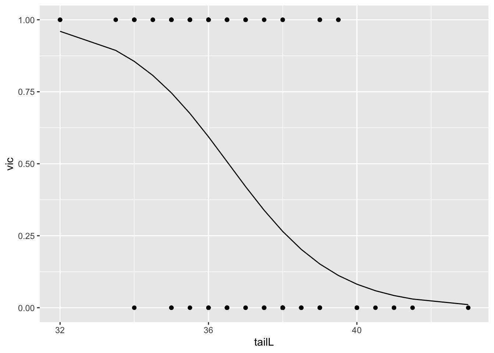

library(ggplot2)
suppressMessages(library(dplyr))
# normal link: elmhurst -> hospital
hospital <- read.csv("https://raw.githubusercontent.com/roualdes/data/refs/heads/master/hospital.csv")Logistic Regression
Linear Regression
ggplot(hospital, aes(stay, infection_risk)) +
geom_point() +
geom_smooth(method = "lm", se = FALSE)`geom_smooth()` using formula = 'y ~ x'
fit <- lm(infection_risk ~ nurses + stay, data = hospital)
summary(fit)
Call:
lm(formula = infection_risk ~ nurses + stay, data = hospital)
Residuals:
Min 1Q Median 3Q Max
-2.45572 -0.82949 0.06932 0.66121 2.90277
Coefficients:
Estimate Std. Error t value Pr(>|t|)
(Intercept) 0.8970137 0.5387271 1.665 0.09875 .
nurses 0.0023132 0.0007958 2.907 0.00442 **
stay 0.3168527 0.0579818 5.465 2.92e-07 ***
---
Signif. codes: 0 '***' 0.001 '**' 0.01 '*' 0.05 '.' 0.1 ' ' 1
Residual standard error: 1.103 on 110 degrees of freedom
Multiple R-squared: 0.3356, Adjusted R-squared: 0.3235
F-statistic: 27.78 on 2 and 110 DF, p-value: 1.713e-10df <- data.frame(
yhat = fitted(fit),
r = rstandard(fit)
)ggplot(df, aes(yhat, r)) +
geom_point()
ggplot(df, aes(r)) +
geom_histogram(bins = 9)
When the number of nurses is fixed at 50, we expect a one day increase in the number of days stayed in a hospital to increase the infection risk by 0.317.
fit %>%
predict(newdata = data.frame(stay = c(10, 11),
nurses = c(50, 50))) %>%
diff 2
0.3168527 When the number of days in a hospital is fixed at 11, we expect each next nurse to increase the infection risk by 0.002.
fit %>%
predict(newdata = data.frame(stay = c(11, 11),
nurses = c(50, 51))) %>%
diff 2
0.002313205 Logistic Regression
## normal link: hospital -> possum
possum <- read.csv("https://raw.githubusercontent.com/roualdes/data/refs/heads/master/possum.csv")ggplot(possum, aes(tailL, pop)) +
geom_point()
possum <- possum %>%
mutate(vic = as.numeric(pop == "vic"))fitl <- glm(vic ~ tailL, data = possum, family = binomial())
summary(fitl)
Call:
glm(formula = vic ~ tailL, family = binomial(), data = possum)
Coefficients:
Estimate Std. Error z value Pr(>|z|)
(Intercept) 25.5662 5.8136 4.398 1.09e-05 ***
tailL -0.6996 0.1580 -4.429 9.45e-06 ***
---
Signif. codes: 0 '***' 0.001 '**' 0.01 '*' 0.05 '.' 0.1 ' ' 1
(Dispersion parameter for binomial family taken to be 1)
Null deviance: 142.79 on 103 degrees of freedom
Residual deviance: 113.44 on 102 degrees of freedom
AIC: 117.44
Number of Fisher Scoring iterations: 4o <- order(possum$tailL)
df <- data.frame(
tailL = possum$tailL[o],
yhat = fitted(fitl, type = "response")[o]
)ggplot() +
geom_point(data = possum, aes(tailL, vic)) +
geom_line(data = df, aes(tailL, yhat))
When tail length increases by 1 cm, from 32 to 33 centimeters, we expect the probability that a possum is from “vic” to go down by 0.04.
fitl %>%
predict(newdata = data.frame(tailL = c(32, 33)), type = "response") %>%
diff 2
-0.03739693 When tail length is increased by 1 cm, from 42 to 43 centimeters, we expect that probability that a possum is from “vic” to go down by 0.01.
fitl %>%
predict(newdata = data.frame(tailL = c(42, 43)), type = "response") %>%
diff 2
-0.01069516